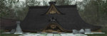

- Welcome to Touhou Wiki!
- Please register to edit. For assistance, check in with our Discord server or IRC channel.
Project Blank
| Project Blank ProjectBlank, Project Blank(P.N.B.) | |
|---|---|
Created by RebRank | |
| Years active |
2002-present |
| No. of Installments |
|
| Official websites | |
|  | Attention: This article is a stub and it needs expanding with more information related to the article's topic. If you can add to it in any way, please do so. |
Project Blank is a collective term for a series of 2D (with 3D background) vertically-scrolling danmaku shooting games by the former members of the informal circle Amusement Makers in Tokyo Denki University, the Doujin circle RebRank. The series holds a futuristic theme, typical for shooting games.
Games in this series[edit]
|
Relation to the Seihou Project[edit]
Both the Seihou Project and Project Blank share a lot of similarities in terms of a futuristic shooter. Both the projects appears to be in a futuristic civilisation with weaponry and themes like "world of the future", "robot & weapons", and "science fiction".
Shunsatsu members[edit]
Members of "Shunsatsu sare do?" have participated in Project Blank who were also junior classmate of Amusement Makers. In the first work Samidare, Ponchi from "Shunsatsu sare do?" gave program support by participating in its development. Also, there is the relation that Yoko (blankvision), a member in the development of Project Blank, wanted to make the Seihou characters VIVIT and Gates to appear as the Extra stage bosses of this game, whose request was permitted.
Canon connexions[edit]
Unlike connexions between the Seihou Project and the Touhou Project, connexions with the Seihou Project and Project Blank seems to hold some strong ties. For instance, it's known that the setting of Project Blank is in another dimension from the Seihou World.[1]
VIVIT was looking for the Holy Grail on the Extra Stage of Samidare for her master, Erich. She said she had to find it "today". She was also looking for it on Shuusou Gyoku's Extra Stage, also stating "today".[2] Judging from VIVIT's way of speaking, it can be surmised that the Extra stage of Samidare is chronologically immediately after the Extra stage of Shuusou Gyoku. Moreover, Gates and VIVIT's themes is an arrangement of music used in the first work Shuusou Gyoku (the original music was by ZUN).
Relation to the Touhou Project[edit]
There isn't much connection between the Touhou Project and Project Blank as it appears ZUN has made no contribution to the series. It does however follows somewhat similar suits to the Touhou Project, such as adapting an Extra Stage and that there are several stages in the bosses' danmaku where each time their health decreases, their danmaku changes. On another note, VIVIT and Gates' themes in Samidare were originally themes that were created by ZUN
In the 3rd part of the Extra Stage of Samidare, The background theme shows a Shinto feeling and the Bakebake appear as generic enemies once again, and Yuki & Mai apprear as the midboss of the stage, referencing to their stage 4 boss battle of Mystic Square. This is of course unofficial since it didn't had ZUN's involvement and thus making their appearance unofficial and may just have been a reference. However, whether RebRank got permission to add these characters to the game and/or to make it "canon" is unknown.
System[edit]
| SMD | RR | RRPM | |
|---|---|---|---|
| Player Character selection | × | ○ | |
| Weapon choice | × | × | |
| Slow movement | ○ | ○ | |
| Shot change during slow movement | × | ○ | |
| Extend: Points | |||
| Extend: Special Item Collection | |||
| Extend: Other | |||
| Difficulty: Extra | ○ | × | |
| Continue: recover on-spot | × | × | |
| Continue: from beginning of stage | × | ○ | |
| SMD | RR | RRPM |